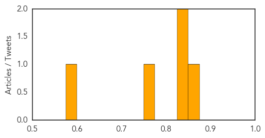
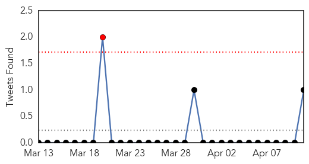
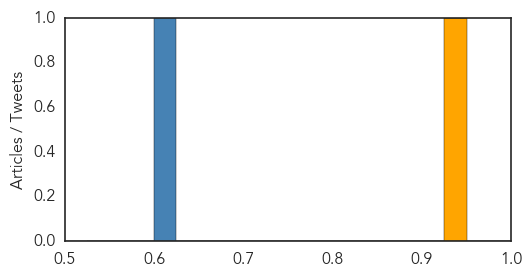

Meningitis
30-Day Web Trend
0 alerts, 0 warnings
30-Day Twitter Trend
0 alerts, 0 warnings

Article Locations
Article Confidences
Top Articles:
- 0.863
- Virginia: HS Senior, Madison Small, died of meningococcemia
- 0.841
- UN Warns Yemen Situation Continues to Deteriorate
- 0.840
- Riverside Education Centre student being treated for bacteria that can cause meningitis
- 0.772
- No Evidence of Outbreak Following Meningitis Death
- 0.587
- Virginia teen who died suddenly had meningococcal meningitis
Top Tweets:
-
No tweets found for Apr 11, 2015
MERS
30-Day Web Trend
0 alerts, 0 warnings
30-Day Twitter Trend
0 alerts, 0 warnings

Article Locations
Article Confidences
Top Articles:
Top Tweets:
- 0.805
- RT: .@WHO has been notified of 1102 laboratory-confirmed cases of MERS-CoV, w/at least 416 related deaths. http://t.co/kD6zuW7zYJ…